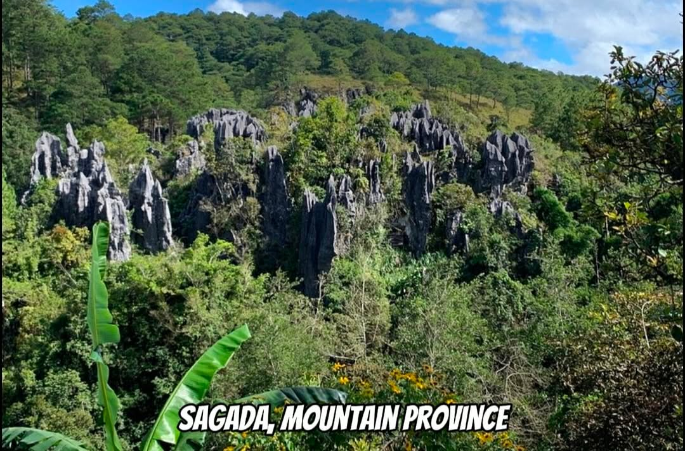

A DIGITAL HOME FOR CORDILLERA HERITAGE
Promoting
Ancestral
Memories
And
Native
Appreciation.
Explore Our Heritage →
ABOUT PAMANA
Keeping heritage alive, allowing its legacy to thrive.
PAMANA aims to help preserve the cultural heritage of Indigenous Peoples in the Cordillera by sharing information about their traditions, beliefs, practices, and way of life. Through this website, we hope to help people learn more about their culture, appreciate its importance, and keep these traditions alive for future generations.
EXPLORE AND LEARN
Our Heritage
LANGUAGE IS HERITAGE
A WORDCAN CARRY
A STORY.
OUR LANGUAGES
Every language holds a world of knowledge.
| Ethnolinguistic Group | Language Spoken |
|---|---|
| Kankanaey | Kankanaey |
| Ibaloy | Ibaloi |
| Bontok | Bontok |
| Applai | Applai |
| Balangao | Balangao |
| Ifugao | Tuwali, Ayangan |
| Kalinga | Limos, Lubuagan, Butbut, Salegseg |
| Isnag / Isneg | Isnag |
| Tingguian / Itneg | Maeng, Masadiit, Adasen, Inlaud |
| Kalanguya | Kalanguya |
| Iwak | Iwak |
| Karao | Karao |
Note: The languages listed are examples and do not represent the complete linguistic diversity of the Cordillera region.
EXPLORE AND LEARN
Traditional Arts & Weaving

Bulul or Bul-ul, a traditional wooden sculpture of the Ifugao people in the Cordillera region. It symbolizes the rice god and serves as a guardian of rice and agricultural prosperity.

Traditional Cordillera Weaving is a cultural practice of the Cordillera people that involves creating handwoven textiles with intricate patterns and designs. It represents their rich cultural heritage, traditions, and identity.

Batok is a traditional tattooing practice of the Cordillera people, especially the Kalinga. Its patterns represent cultural identity, bravery, and personal achievements.
Traditional Basket Weaving is a craft practiced by indigenous communities in the Cordillera. Using materials such as rattan and bamboo, artisans create baskets for carrying, storing, and gathering different items.
EXPLORE AND LEARN
Beauty of the Cordillera

A peaceful place known for its amazing rock formations, mountains, and beautiful natural views.

A beautiful waterfall with unique rock formations and clear flowing water, surrounded by green forests.

A famous mountain known for its cold weather, beautiful sunrise, and breathtaking sea of clouds.

A popular hiking destination with beautiful mountain views, grasslands, and pine trees.

Beautiful green rice terraces built along the mountains, showing the hard work and culture of the Ifugao people.
EXPLORE AND LEARN
Traditional Dances & Instruments

Banga Dance is a traditional dance of the Kalinga people performed by women carrying clay pots on their heads. It showcases grace, balance, and the cultural traditions of the community.
Bendian Dance is a traditional Ibaloi dance performed in groups during celebrations and important gatherings. It symbolizes unity, thanksgiving, and community spirit.
Tadek is a traditional dance of the Abra people performed during celebrations and community gatherings, often accompanied by the rhythmic sounds of gongs.
Gangsa is a traditional flat metal gong played by Cordilleran communities during rituals, celebrations, and cultural performances.
Tongali is a traditional bamboo nose flute used by indigenous communities in the Cordillera.

Solibao is a traditional wooden drum covered with animal skin. It is played during rituals, gatherings, and cultural performances in Cordilleran communities.
COMMUNITY VOICES
“A Sacrifice in the Mountains of the Philippines (The Tradition of Cañao)” — YOUTUBE